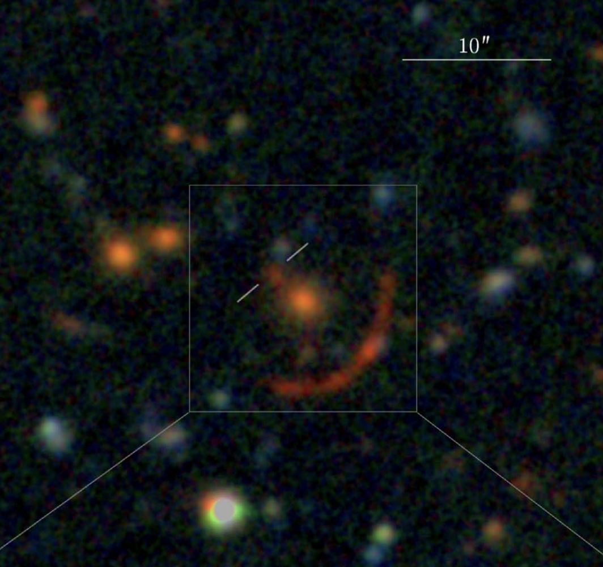

Snails in the Milky Way Disk Phase Space
 I've worked on the phase space spirals with Prof. Kathryn Johnston since
I arrived at Columbia in 2022.
These spirals were discovered by
Antoja et al. (2018) using Gaia DR2 data in 2018, when they found a spiral
structure in the z-v_z plane for Solar Neighborhood stars, suggesting a past perturbation.
Since then, researchers have discovered that these spirals exist all across the Galactic disk
and are prevalent not just in density but also in velocity and even chemistry.
But much remains unknown about the phase spirals, including their cause and how
they evolve over time.
I've worked on the phase space spirals with Prof. Kathryn Johnston since
I arrived at Columbia in 2022.
These spirals were discovered by
Antoja et al. (2018) using Gaia DR2 data in 2018, when they found a spiral
structure in the z-v_z plane for Solar Neighborhood stars, suggesting a past perturbation.
Since then, researchers have discovered that these spirals exist all across the Galactic disk
and are prevalent not just in density but also in velocity and even chemistry.
But much remains unknown about the phase spirals, including their cause and how
they evolve over time.
In my work, I have been using basis function expansions (BFEs) and Singular Spectrum Analysis (SSA) on simulations to understand correlations and trends in phase spiral properties across large scales of galactic disks. In Tavangar et al. (2026) we found that phase spirals wind up differently in different parts of the disk, with inner disk phase spirals experiencing large delays in winding compared to the outer disk. This has significant implications for how we should interpret observations, suggesting that perturbation times derived from outer disk phase spirals are likely to be closer to the true perturbation times. It also points to the importance of understanding how self-gravity affects phase spiral evolution, which we start to explore in our paper but is still an open question. In an upcoming paper, I will explore the correlations between phase spiral amplitudes across galactic disks. These correlations give us a new way to explroe the nature of the perturbation that cuased the phase spirals.
In the next few years I am excited to use the tools we have developed to explore phase spiral dynamics in more detail, as we attempt to connect the simulations with the observations and learn more about the history of the Milky Way. There may even be a connection to small scale dark matter halos which I am thinking about exploring in the next year.
The GD-1 Stream
 Last year, Dr. Adrian Price-Whelan and I collaborated to create a
framework
to model the density of stellar streams,
which we applied to GD-1 as a test.
The framework builds on previous similar work but has the novelty of including
a method to model stars away from the main stream track. These stars, such as the "spur"
in GD-1, are likely to be the most constraining when trying to understand the effects of
small dark matter subhalos on streams.
Last year, Dr. Adrian Price-Whelan and I collaborated to create a
framework
to model the density of stellar streams,
which we applied to GD-1 as a test.
The framework builds on previous similar work but has the novelty of including
a method to model stars away from the main stream track. These stars, such as the "spur"
in GD-1, are likely to be the most constraining when trying to understand the effects of
small dark matter subhalos on streams.
I am excited to extend this framework to many more streams. The idea is to create a catalog of density models along with the most interesting or constraining stream mfeatures which can be used by the community as follow-up target regions as we attempt to constrain dark matter with stellar streams. With many new surveys and telescopes coming online in the next few years, we are going to have a wealth of new data on streams, and I hope this framework can help us make the most of it!
Tidal Envelopes Around Globular Clusters
Last year, Dr. Ani Chiti and I collaborated on a
paper
exploring extra-tidal features around globular clusters in the DELVE footprint.
We found two clusters, NGC 5897 and NGC 7492 with previously undetected envelopes.
We then asked ourselves whether we should have expected to find more envelopes,
or whether the LSST survey would allow us to discover more. We found that while every
globular cluster is losing mass due to tidal stripping, there are many clusters where
the surface brightness of the tidal features is too low for us to detect even with LSST,
at least when only using photometry to identify candidate stream stars.
The Phoenix Stream
 During my undergrad at the University of Chicago, I was advised by Prof.
Alex Drlica-Wagner. My
first completed project was an analysis of the Phoenix stellar stream
using Dark Energy Survey (DES) data by fitting a non-parametric spline model
to the density, track, and width of the stream. We found that Phoenix has
structure on smaller scales than other similarly modeled streams. If a dark
matter subhalo caused those perturbations, the required low mass of the subhalo
could help constrain the nature of dark matter!
During my undergrad at the University of Chicago, I was advised by Prof.
Alex Drlica-Wagner. My
first completed project was an analysis of the Phoenix stellar stream
using Dark Energy Survey (DES) data by fitting a non-parametric spline model
to the density, track, and width of the stream. We found that Phoenix has
structure on smaller scales than other similarly modeled streams. If a dark
matter subhalo caused those perturbations, the required low mass of the subhalo
could help constrain the nature of dark matter!
The Palomar 13 Stream
 In a project led by Dr. Nora Shipp, we
discovered tidal tails around the globular cluster Palomar 13
When confirmed, this will be one of the only streams for which we have a
known progenitor, which can greatly help constrain the orbit. Getting the
right orbit is crucial for increasing our understanding of the Milky Way
potential and the way structure moves within and interacts with the dark matter halo.
In a project led by Dr. Nora Shipp, we
discovered tidal tails around the globular cluster Palomar 13
When confirmed, this will be one of the only streams for which we have a
known progenitor, which can greatly help constrain the orbit. Getting the
right orbit is crucial for increasing our understanding of the Milky Way
potential and the way structure moves within and interacts with the dark matter halo.
Strong Lensing
